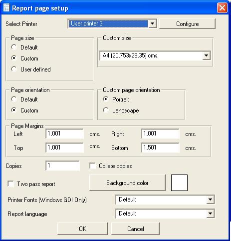

To alter report page setup go to page setup option in file menu.
If you left page size Default, the engine will not select any page size before printing, that is will use the default system page size, you can select a predefined page size or define a new one (only Windows supports custom page sizes with limitations).
If you left page orientation Default, the enine will not select any page orientation before printing, that is will use the default system page orientation.
You can configure the report to a specific page size, and also force printer orientation, the default is use current configured printer page and orientation.

Language property allow you to design the report to print it in multiple languages, the language property only affect labels, you design the report in english, then switch to another language, and modify labels, before printing you can switch language from Report Manager Designer and Report Manager components in Delphi/Kylix/Builder (language property).
Printer Fonts property allow Microsoft Windows platform the option to use printer fonts in dot matrix printers so the report will be printed in Native Printer fonts, with the best precision and speed. To do so you must install the correct driver for the selected printer, or the printer driver that the physical printer is emulating via Hardware.
Note: To print in Linux in fast test mode you can install the ps2ascii as a filter in your printer spooler. If you have some sample of doing it, please e-mail me so I can include it in documentation.
Two Pass Report property allow to know additional information about the report before printing the first page, if you select this, you can use the pagecount function to obtain the total number of pager of the report. If this option is set, the report will be calculated entirely, then printed. It can consume more system resources and the preview is slower because the entire report is calculated before the engine show the first page.
Duplex and paper source is implemented only for Microsoft Windows, allow the selection of a paper source (print drawer source) and enable duplex (two side) print on printers having this feature (usually high volume laser printers).
Page margins are used as the origin for printing sections, bottom margin limits the space used in the bottom of the page, and right margin limits the space used to the right of the page that is when printing horizontally (labels for example).
Prefered save format change the way the report is stored to file, you can select plain text to save the report definition as text and track changes with some version control system, to obtain a smaller file but not human readable select zlib compressed.
Printer selection
You can force the report to select a specified printer. There are predefined printer configuration names, and each printer configuration name can be linked to a system installed printer, it's also useful to determine wich printer will use devicefonts (Windows only) and to fine adjust the position of the page in the physical page.
By selecting system configuration you force all users use a single configuration (you must be root in Linux or Administrator in Windows).
Printer selection in Windows has some issues, see known issues and workarounds.